Everything DotTab does.
Five minutes to read. Nothing here is required — a new tab works the moment you install. This is for when you want to make it yours.
Getting started
Install from the Chrome Web Store and open a new tab. You'll see the Dashboard preset: greeting, clock, search, tasks, weather, a quote. Chrome shows a small bar asking if you want to keep the new tab — say yes.
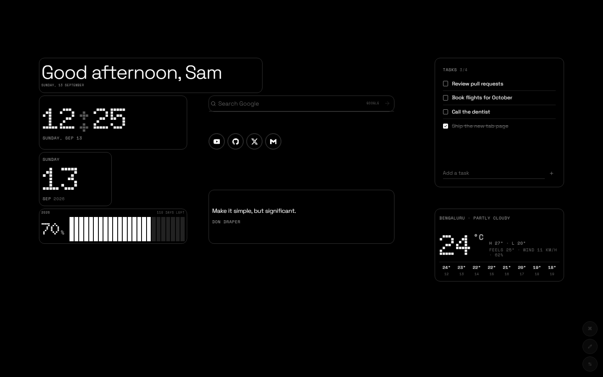
Type your name once in Settings → Widgets → Greeting and it greets you by time of day.
Editing the grid
Press E (or the pencil button, bottom right). Every widget grows a thin outline:
- Move — drag anywhere on a widget. It snaps to the grid.
- Resize — pull the handle at the bottom-right corner.
- Remove — the × in the top-right corner.
- Configure — the ⚙ opens that widget's own settings.
The grid is 32 columns wide and scales with the window, so the layout you build on a laptop looks the same on a 4K monitor. Narrow windows (under 768 px) fold into a single scrolling column.
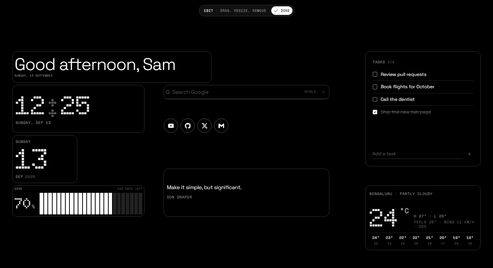
Adding a widget from Settings drops it into free space and keeps edit mode on, so you can drag it where you want right away.
Presets & share codes
Settings → Layouts has five starting points: Dashboard, Minimal, Productivity, Playground and Everything (all 28 widgets on one screen — needs a big monitor).
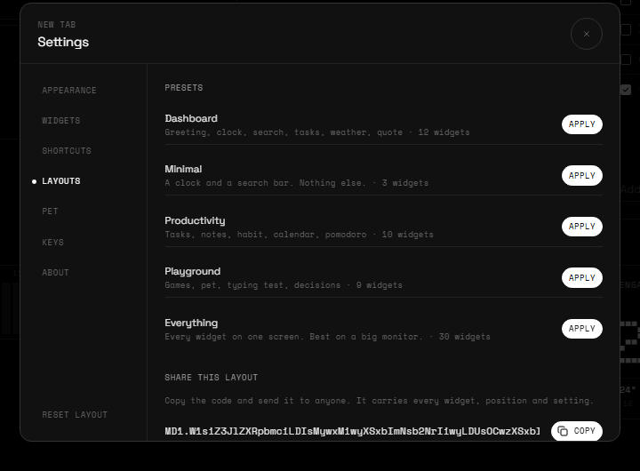
Share codes turn your whole layout into a short string that starts with MD1. Copy it, send it to a friend, paste it into their Layouts tab. Widget settings travel with it; your notes and tasks don't.
Command palette
Ctrl K (⌘ K on Mac) opens one box that does most things:
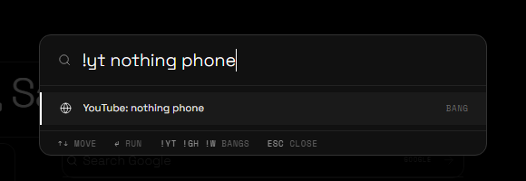
- Search — type and press Enter to search with your default engine.
- Bangs —
!yt nothing phonesearches YouTube. Also!g !gh !w !r !x !maps !npm !mdn !a !ddg. - Maths —
2^10/3shows the answer; Enter copies it. - URLs — anything that looks like a domain opens directly.
- Commands — "Add Weather", "Pomodoro settings", "Toggle dark / light", "Reset layout"… start typing.
Appearance & focus
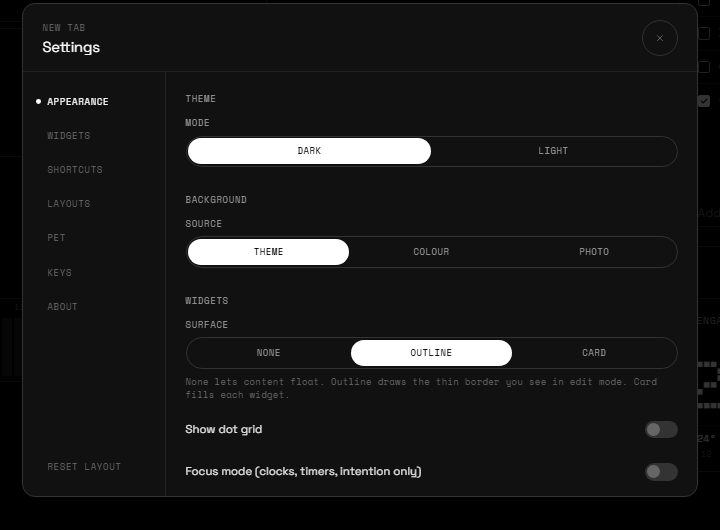
- Theme — dark (true black, good for OLED) or light. T flips it.
- Background — plain, a colour, or your own photo.
- Surface — how widgets sit on the page: None lets content float, Outline draws a thin border (default), Card fills each widget.
- Dot grid — show the grid dots behind everything.
- Focus mode — F hides everything except clocks, timers and your intention. Good for deep work.
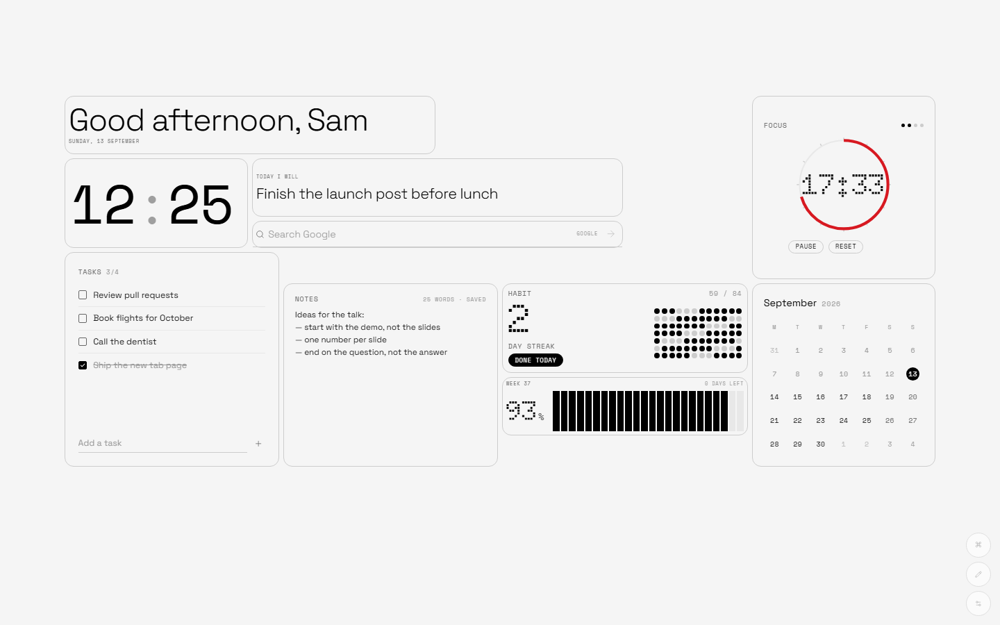
Time widgets
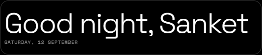
GreetingHello by time of day, with your name and the date. Pick which line shows.
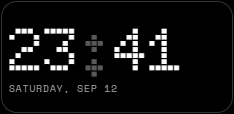
ClockDot-matrix time. 12/24 h, seconds, blinking colon, three typefaces, left or centred.
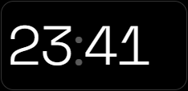
Minimal ClockJust the hours and minutes, as big as the widget.
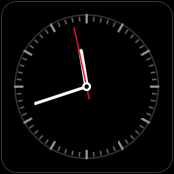
Analog ClockAn instrument face with tick marks and a red second hand.
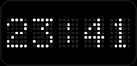
LED ClockA dot-matrix LED panel. Dot size and spacing are adjustable.
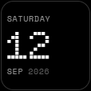
DateToday as a hero number with weekday and month.
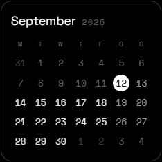
CalendarMonth grid with today inverted. Week starts Monday or Sunday.
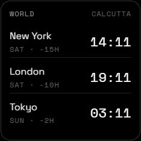
World ClockAny cities you like, with the offset from you. Add as many rows as fit.
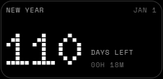
CountdownDays (and hours) until a date you name — a launch, a trip, the new year.
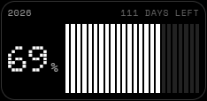
ProgressHow much of the year, month, week or day is gone. Segments or year-in-dots.
Planning widgets
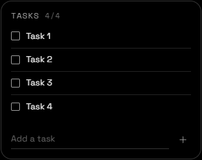
TasksA short list. Enter adds, tick to strike through, done items can auto-clear.
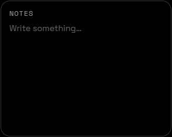
NotesA scratchpad that autosaves as you type. Word count in the corner.
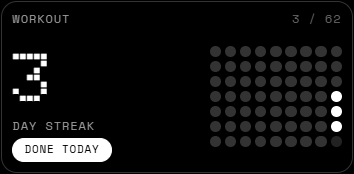
HabitOne habit, a dot for every day you show up, streak up top. Edit past days if you forgot.
Focus widgets
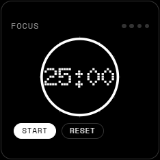
Pomodoro25/5 by default, long break every four. Keeps running across new tabs and restarts.
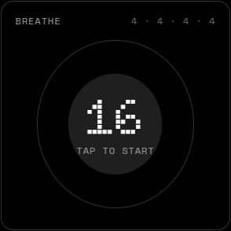
BreatheBox breathing (4·4·4·4), 4-7-8, or your own timing. Tap to start.
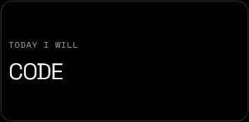
IntentionOne line for today. Resets tomorrow.
Info widgets
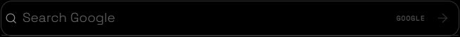
SearchGoogle, DuckDuckGo, Bing, Brave or your own. URLs open directly. / focuses it.
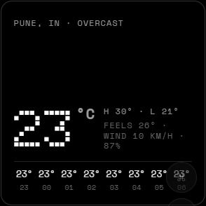
WeatherLive from Open-Meteo. Your location (asks once) or a city you type. °C/°F, details, hourly strip.
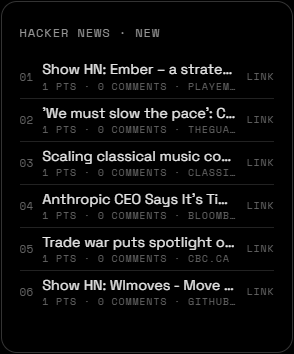
HeadlinesHacker News top, new, best, ask or show. Opens the link or the comments.
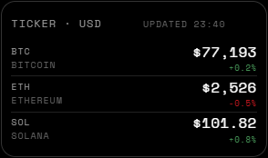
TickerCrypto prices from CoinGecko with 24 h change. Choose the coins and currency.
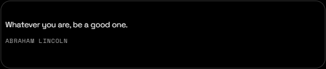
QuoteOne line to think about. Rotates daily or on every new tab.
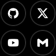
ShortcutsOne icon per site. Brand icons for the big ones, favicons for the rest.
Your most-visited sites as icons. Asks for the topSites permission only when you add it.
Fun widgets
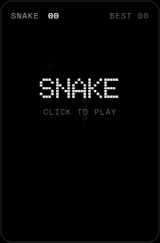
SnakeDot-matrix snake. Click the board, arrows or WASD. Best score is kept.
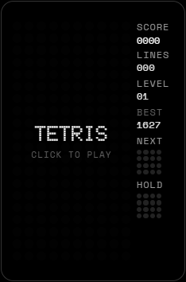
TetrisArrows move and rotate, Space hard-drops, C holds. Next piece preview.
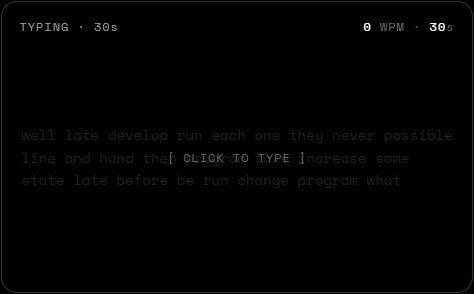
Typing Test15, 30 or 60 seconds of common words. WPM and accuracy, best kept per length.
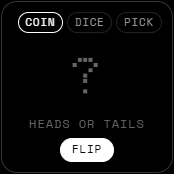
DecideCoin, dice, or pick from a list you type. For when you can't.
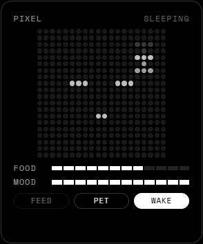
Pixel PetA little creature on a dot grid. Feed it, pet it, let it sleep. Food and mood bars drain over time.
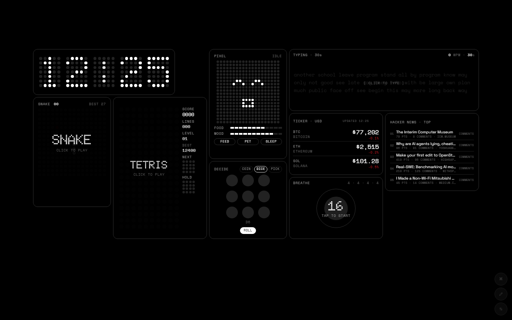
The pixel pet
Separate from the Pixel Pet widget, a tiny bot walks along the tops of your widgets, swings between them on a web, and occasionally says something. Click anywhere on the canvas and it walks there. It remembers where it was standing, so a new tab starts it in the same place.
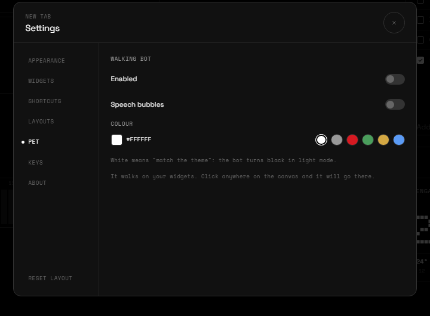
Keyboard
| Key | Does |
|---|---|
| Ctrl / ⌘ K | Command palette |
| E | Toggle edit mode |
| , or . | Open settings |
| / | Focus the search widget |
| T | Toggle dark / light |
| F | Toggle focus mode |
| ? | Shortcut list |
| Esc | Close anything / leave edit mode |
Single-key shortcuts pause while you type in a widget or play a game.
Your data
Everything — layout, widget settings, tasks, notes, habits — lives in Chrome's local storage on your machine. No account, no sync server, no analytics. Removing the extension deletes it.
Settings → About → Your data exports it all as one JSON file and imports it again on another machine or after a reinstall. Details in the privacy policy.
FAQ
Weather says "location blocked". Chrome denied geolocation. Click the site-info icon in the address bar and allow it, or set a city in the widget's settings.
Top Sites is empty. Chrome only reports sites you've visited a few times, and it needs the permission you granted when adding the widget.
The Pomodoro kept running after I closed the tab. That's by design — it's a timer, not a tab. Reset clears it.
Can I get Google's new tab back without uninstalling? Chrome has no toggle for that; disabling the extension in chrome://extensions does it and keeps your data.
Something's broken / I have an idea. Mail me. One line is enough.